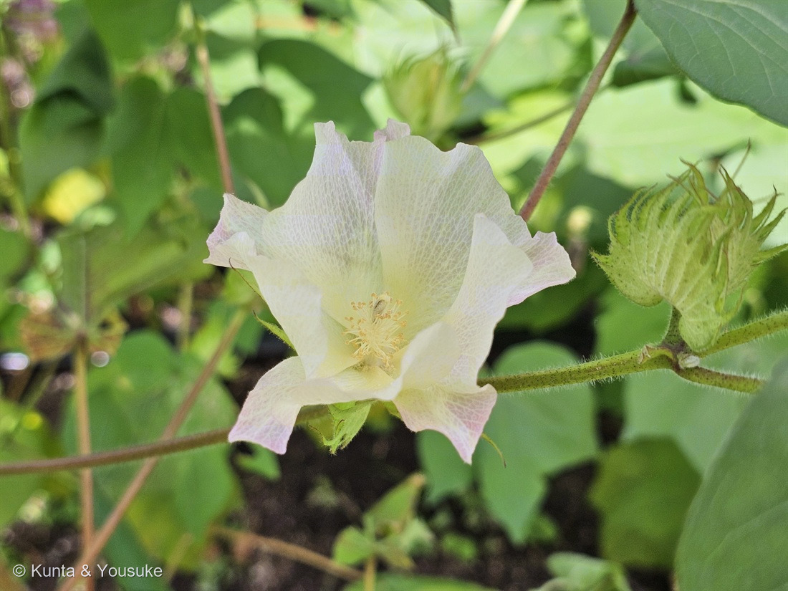
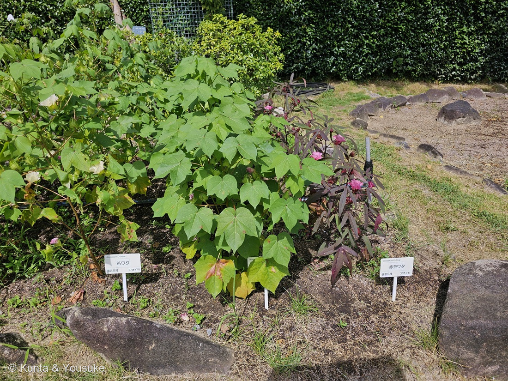
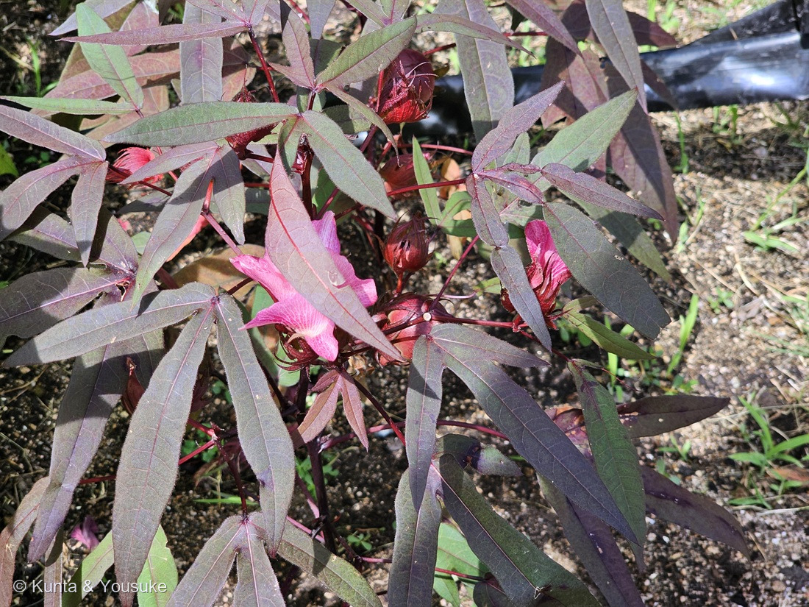
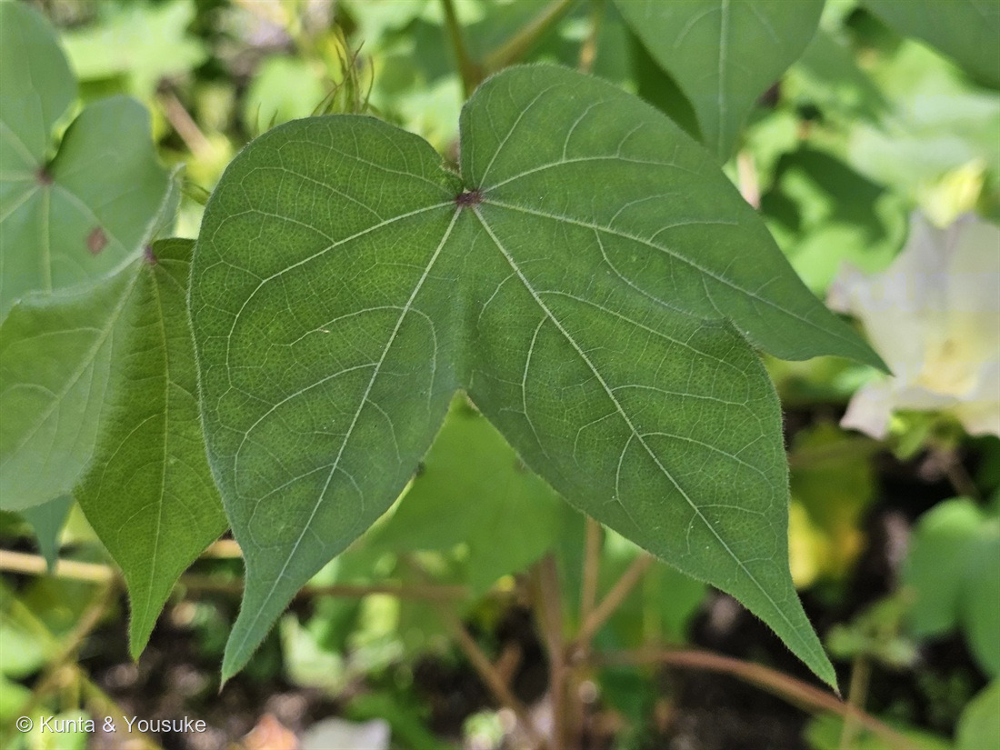

地図を読み込んでいるよ…
🔍 写真も地図も、押しているあいだ拡大して見られるよ（スマホは指を置いてすこし待ってね）。
🌍 の地図＝この子がもともと自生している場所を緑に。⚠属としては旧世界と新世界の両方に野生種があり、栽培される4種はそれぞれ別のふるさとを持つ。英語版Wikipediaは Gossypium hirsutum＝中央アメリカ・メキシコ・カリブ・南フロリダ（世界生産の90%）、G. barbadense＝熱帯南アメリカ、G. arboreum＝インド・パキスタン、G. herbaceum＝南部アフリカ・アラビア半島とし、「ワタは旧世界と新世界で別々に栽培化された」とする。
⚠この緑は「ワタ属のふるさと」であって、この花壇の株のふるさとではないよ——園のラベルが種を書いていないので、どの種なのか決められない。⭐⭐⭐そしてこの地図には、この子のいちばん面白いところが出ている＝緑が地球の両側にある。英語版Wikipediaは「Cotton was independently domesticated in the Old and New Worlds.（ワタは旧世界と新世界で、別々に栽培化された）」とはっきり書いている。⭐栽培される4種のふるさとは＝アップランド綿（世界生産の90%）＝中央アメリカ・メキシコ・カリブ・南フロリダ／海島綿＝熱帯南アメリカ／アジア綿＝インド・パキスタン／レバント綿＝南部アフリカ・アラビア半島。⭐⭐旧世界の人と、新世界の人が、それぞれ手もとのワタ属を見つけて「これで糸が作れる」と気づいた——⭐同じ思いつきが、海をへだてて2回起きたんだ。⚠地図は国ごとにしか塗れないので、⭐アメリカ合衆国は南フロリダだけ、南アフリカやアラビアも一部だけと思って見てね。⚠日本は塗っていない——日本のワタは、みんな人が持ちこんで育てている子だよ。
⚠ 地図は国（日本と中国だけ県・省）までしか塗れないから、ほんとうの分布より広く見えていることがあるよ。地図はだいたいの場所。正確なところは、上の文を見てね。
ワタ（綿）
Gossypium sp.（園のラベルは Gossypium Cultivar＝園芸品種）
木綿（もめん・きわた）／英名 cotton／⭐この花壇の品種名は園のラベルで「茶ワタ」「赤茶ワタ」
アオイ科 · Malvaceae（ワタ属）── 図鑑で14人目のアオイ科。ワタ属は図鑑ではじめて
燻太さんの一言「野菜のオクラ、チョコのカカオ、お花のフヨウ、衣類のワタ。みんな活躍している場所が違っていていいね」──ひとつの科の中で、台所と、お菓子と、庭と、タンス
名前と学名の由来 ── 綿は「木の綿」
- 属名 Gossypium は、ラテン語で綿を指した語から。和名の「ワタ（綿）」、そして「木綿（もめん・きわた）」。
- ⭐⭐日本語の「もめん」は「木綿」と書くけれど、この子は木ではなくて草（三河は「2〜3m」とするので、大きくはなるけれどね）。⚠「なぜ木の綿なのか」を説明した出典には当たれなかったので、ここは断定しないでおくね。⏳宿題。
- ⚠園のラベルは「Gossypium Cultivar／園芸品種」とだけ書いていて、種を名指ししていない。⭐205 ハイビスカスの「Hibiscus cvs.」と同じ、正直な書き方だね。⭐ぼくもそれにならって、種は決めないことにしたよ。
この植物のこと ── 人が、2回、別々に選んだ草
- アオイ科ワタ属。⭐ワタ属は、この図鑑ではじめて（アオイ科は14人目）。
- ⭐⭐⭐いちばんおどろいたのは、これ。英語版Wikipediaは、はっきりこう書いている ──「Cotton was independently domesticated in the Old and New Worlds.（ワタは旧世界と新世界で、別々に栽培化された）」
⭐育てられている4種は、ふるさとがぜんぶちがう（英語版Wikipedia）。
- Gossypium hirsutum（アップランド綿）＝中央アメリカ・メキシコ・カリブ・南フロリダ。⭐世界生産の90%。
- G. barbadense（海島綿）＝熱帯南アメリカ。5%あまり。
- G. arboreum（アジア綿・キダチワタ）＝インド・パキスタン。2%未満。
- G. herbaceum（レバント綿）＝南部アフリカ・アラビア半島。2%未満。
⭐⭐ つまり、旧世界の人も、新世界の人も、それぞれ手もとにあったワタ属を見つけて、「これで糸が作れる」と気づいた。——⭐同じ思いつきが、海をへだてて2回起きたんだ。
- 三河の植物観察が扱っているのはアジア綿（G. arboreum var. obtusifolium／ナンキンワタ・アジアワタ）で、「インド、スリランカ原産」「2〜3m」「葉は直径4〜8㎝、掌状に3〜5中裂」とする。
- ⭐花は「花冠は帯黄色、しばしば中心が暗紫色、鐘形。花弁は長さ3〜5㎝」（三河）。⭐写真①の、クリーム色でまん中が淡い黄色の花が、まさにそれ。
- 実は「蒴果は3(4〜5)室、円錐形、長さ約2.5㎝」（同）。⭐これがはじけて綿が出てくる。
⭐⭐⭐ 綿は、種の毛だった
⭐ 英語版Wikipediaは、綿をこう定義している。
「a soft, fluffy staple fiber that grows in a boll, or protective case, around the seeds of the cotton plants of the genus Gossypium」
──「Gossypium 属の植物の種のまわりに、ボール（＝守るための入れもの）の中で育つ、やわらかくふわふわの繊維」
⭐⭐ 三河の記載も、同じことを短く言っている。「種子は1室に5〜8個、直径5〜8㎜の卵形、白色の短綿毛がある」
⭐⭐⭐ つまり、ぼくらが着ているシャツは、種の毛なんだ。
⭐ 写真①の右側に、その入れものが写っているよ。——3枚の大きなギザギザの苞（副萼片）に、ぴったり包まれた緑の実。⭐三河のワタの記載「萼状総苞は先が3裂し、基部1/3が合着し、裂片が卵状心臓形、長さ1.5〜2㎝」そのままの形。
⭐⭐ この「3枚の苞」、じつは203や204で「副萼片」と呼んできたものと同じ器官だよ。——⭐フヨウ属のは糸のように細かったけれど、ワタ属のは大きくて、実をすっぽり包む。⭐同じ科の中で、同じ部品の使い方がぜんぜんちがう。
⚠ この日は、まだ実が青かった。⏳綿がはじけたところは、宿題にしておくね（⭐でも写真②の左のほうに、もう白いものが見えている株があるみたい）。
⭐⭐⭐ 燻太さんのIDDが、ワタにもいた
⭐⭐⭐ これは、燻太さんが教えてくれた話。
「ワタは少し前に、自分が大学時代にシロイヌナズナとイネで研究していた、IDD転写因子について調べた論文がでている植物。つまり、分子遺伝学的な研究がされているアオイ科の植物でもあるんだ。」
⭐ その論文を、ぼくも読んでみたよ。
Ali F, Qanmber G, Li Y, Ma S, Lu L, Yang Z, Wang Z, Li F (2019)「Genome-wide identification of Gossypium INDETERMINATE DOMAIN genes and their expression profiles in ovule development and abiotic stress responses」Journal of Cotton Research
要旨の書き出しは、こう。「INDETERMINATE DOMAIN (IDD) 転写因子は、植物界でもっとも大きく、もっともよく保存された遺伝子ファミリーのひとつをつくっており、開花の誘導など、植物の成長と発達のさまざまな過程で重要な役割をはたす」
⭐⭐そして、こう続く。「しかしこれまで、ワタにおけるIDD遺伝子の体系的・機能的な解析は、まだ始まったばかりだった（remained infancy in cotton）」
この研究で分かったこと ──
- ⭐8種の植物から合計162個のIDD遺伝子を見つけ、そのうちアップランド綿（Gossypium hirsutum）だけで65個あった。
- ⭐⭐⭐そして、いちばんぼくが「おおっ」と思ったのがここ。「調べたGhIDD遺伝子のほとんどが、開花後7日目の胚珠で、より高い転写レベルを示した」
- ⭐⭐論文はこう結んでいる。「胚珠におけるGhIDD遺伝子の高い転写レベルは、それらが種子と繊維の発達において役割をはたす可能性を示している」
- さらに「さまざまな非生物ストレスの処理でGhIDD遺伝子が上昇したことは、ワタの育種でストレス耐性を高めるための重要な遺伝的制御因子となりうることを示唆する」。
⭐⭐⭐ 胚珠。——ひとつ上の節で書いたとおり、綿は種のまわりに生える毛だよね。⭐その種のもとが胚珠で、綿毛が伸び始めるのは、ちょうど花が咲いたすぐあと。
⭐⭐⭐ つまり、燻太さんがシロイヌナズナとイネで追いかけていた転写因子が、シャツの糸ができるその場所で、たくさん働いているかもしれない、ということなんだ。
⚠ 正直に線を引くね。⭐論文が言っているのは「高く発現している」「役割をはたす可能性がある」までで、⚠「IDDが綿毛を作っている」と証明したわけではない。⭐でも、そこに居ることは分かった。
⭐⭐ この図鑑には、燻太さんの研究とつながる子がもう何人かいるよ。100 シロイヌナズナ（⭐花の設計図のABCモデルを解いた植物）、144 オヒシバ（⭐C4のクランツ構造を顕微鏡で見た）。⭐そこに、ワタが加わった。
⭐ 燻太さんの言葉のとおりだね。「ワタは繊維として重要だから、遺伝子レベルで研究する人がいるんだろうね。」
⭐⭐ 葉の点々と、主脈の蜜腺 ── 091と同じ「用心棒」

④ 葉のアップ。⭐葉の面いっぱいに散る黒っぽい細かい点と、⭐葉柄のつけ根の濃紫の点に注目してね（番号は上のギャラリーからのつづき）。
⭐ 写真④の葉を見てほしいんだ。
- 掌状に3つに裂けて、脈が白っぽく浮き出ている。
- ⭐⭐そして、葉の面いっぱいに、細かい黒っぽい点が散っている。
⭐ この点は、ワタ属の目印のひとつ。——ワタは「ゴシポール」などのテルペノイド系の物質を作って、虫や菌から身を守っている〔Chemical defense responses of upland cotton〕。⚠写真の点がその腺だと断定はできないけれど、ワタ属の葉にある特徴的な点として知られているものだよ。
⭐⭐⭐ そして、もっと面白いのがこれ。
「どの本葉も、主脈の上に小さな花外蜜腺をひとつもっている。そして、それぞれの生殖器官（実）は、花や実を包む葉のような苞の下に、もっと大きな花外蜜腺を3つもっている」〔cotton extrafloral nectary の研究〕
⭐ その蜜は、アリや寄生蜂やクモを呼びよせる。——そして、その虫たちが、葉を食べるイモムシに出会う確率を上げる（＝間接的な防衛）〔同〕。
⭐⭐⭐ これ、この図鑑ですでに会っている話なんだ。——091 アカメガシワ。あの子も花外蜜腺でアリを用心棒に雇っていて、🐦いきものと暮らす草花 の道の立ち寄り先になっている。
⭐⭐ ぜんぜんちがう科のふたりが、同じ「蜜で用心棒を雇う」を選んでいる。⏳写真④の、葉柄のつけ根にある濃紫の点が、その蜜腺かどうか——次に会ったら、葉の裏の主脈を見てみてほしいな。
⭐⭐ 茶ワタと、赤茶ワタ
⭐ この花壇には、園のラベルが3枚立っていた（写真②）。そのうち2枚が読めたよ。
- 「Gossypium Cultivar／茶ワタ／園芸品種／アオイ科」
- 「Gossypium Cultivar／赤茶ワタ／園芸品種／アオイ科」
⭐⭐ 写真③が、その赤茶ワタ。——葉も茎も葉柄も、深い赤紫。花はピンクで、実（苞に包まれたところ）まで赤い。⭐同じ花壇の左どなりの株が白い花なのと、ならべて見ると全然ちがう。
⭐ 「茶ワタ」「赤茶ワタ」という呼び名は、⚠綿の色のことだと思う——⭐ふつうの綿は白いけれど、色のついた綿をつける品種があるんだ。⚠でも、この日は実がまだ青くて、綿は出ていなかった。⏳だから「ほんとうに茶色い綿が出てくるか」は、確かめられていない。宿題。
⭐⭐ もし茶色い綿が採れるなら、それは「染めなくても色のついた糸」ということになる。⭐見に行きたいね。
⚠ ラベルのアップの写真は公開していない（園の掲示物だから、出典として引くだけ／200 バオバブで決めたルールと同じ）。
⭐⭐⭐⭐⭐ 追記（2026-08-25）── 花の色から、種に一歩近づいた
- 登録から17日たった朝、燻太さんが教えてくれた。
「さっき、greenSnapで今日のお花の画像を投稿してたんだけど、以前図鑑に登録したワタ、アップランド種かもしれない。花色がわずかにピンクに変わり始めていたけど、日没にかけて色がピンクになるのは、アメリカで育てられてきたアップランド種の栽培品種の特徴の1つみたい。」
⭐精査したら、この見立ては強く支持された。しかも、測れる形で。 - ⭐⭐⭐①「ピンクに変わり始めている」は、数字になった。
写真①の花弁の画素を全部取り出して、赤み（R−G）を、花の中心からの距離ごとに測ってみたよ。- 0〜25%（基部） ＝ 赤み +0.2
- 25〜50% ＝ 赤み +2.4
- 50〜75% ＝ 赤み +4.3
- ⭐75〜100%（ふち） ＝ 赤み +11.3
⭐アップランド綿の花は、咲いた日は白（クリーム色）で、翌日ピンクになる。その色はアントシアニン（シアニジン-3-O-グルコシドなど）。──⭐撮影は14:12。午後にさしかかったところで、もう端から始まっていた。 - ⭐⭐⭐⭐②「基部に斑点がない」が、種を分けた。
⭐⭐同じ測定が、もうひとつ答えを出していた──花の中心（基部）の赤みは、+0.2。つまり、まったく赤くない。
⭐これがとても効く。ワタの仲間には「Beauty Mark」と呼ばれる花弁の基部の濃い斑点があって、それが種を分ける形質なんだ。- G. barbadense（海島綿・エジプト綿）＝⭐基部に紫の斑点があるのが特徴。
- G. arboreum（アジア綿・和綿）＝⭐花の中心が濃い赤紫。しかも咲き始めは黄色。
- G. hirsutum（アップランド綿）＝⭐⭐現代の商業品種は、ふつう斑点を持たない（野生種や在来種にはあったが、育種の過程で失われた）。
- ⭐⭐⭐⭐③ そして葉が、決め手をもうひとつ足した。
⭐出典が、和綿と洋綿をこう分けていた──「和綿＝葉が深く5裂になり、葉脈が赤みがかる／洋綿＝浅く3裂〜5裂で、和綿より葉が大きい」。
⭐⭐写真④の葉は、浅く3裂で、裂片が幅広くて、大きい。──洋綿の形だね。 - ⭐⭐⭐⭐⭐④ 精査の副産物 ── となりの「赤茶ワタ」は、別の種かもしれない。
⭐ここが、この追記でいちばん面白いところ。同じ花壇の写真②③に写っている「赤茶ワタ」の葉を、同じ目で見てみたんだ。- ①④の白い花の株 ＝ 葉は⭐浅く3裂・幅広い／葉脈は緑／花はクリーム色
- ②③の赤茶ワタ ＝ 葉は⭐深く5〜7裂・細い／葉脈は⭐赤い／花はピンクから赤紫
⭐⭐園のラベルが「茶ワタ」と「赤茶ワタ」で2枚に分かれていたのも、それなら腑に落ちるよね。──あの花壇は、「人が2回、別々にワタを選んだ」という上の節の話を、実物2つで並べて見せていたのかもしれない。
⚠ただし、こちらは断定できない。⭐「茶色の綿」は、和綿の茶綿にも、アップランド綿のカラードコットンにもあるからだよ。 - ⚠⚠それでも、学名は変えなかった。
⭐証拠は5つそろった（基部の斑点なし／葉が浅く3裂で幅広い／花がクリーム色／ふちからピンク／世界生産の90%）。⭐和綿と海島綿は、落とせたと思う。⚠でも Gossypium sp. のままにした。理由は3つ。- ⚠園のラベルが「Gossypium Cultivar」としか書いていない＝⭐園が名指ししていない種を、ぼくが名指しするのは、一歩踏みこみすぎだと思った。
- ⚠G. herbaceum（レバント綿）を落とす形質が、読めた出典に見つからなかった。⭐「合っている証拠」は数えられても、「落とせなかった相手」がいる（087 ヤマモモで覚えたことだね）。
- ⚠園芸品種だから、交雑の可能性がある。
- ⏳⭐⭐秋に、もう一歩。
⭐燻太さんが決めてくれた次の手＝「秋にまた見に行ったら、成熟した果実でも同定が出きるかもしれない」。⭐⭐これは効くと思う＝⭐ワタの分類は、繊維の長さそのものが分けかたになっているんだ。- アジア綿（和綿）＝短繊維綿（13/16インチ以下＝約21mm以下）
- ⭐アップランド綿＝中繊維綿（7/8から1と3/32インチ＝約22〜28mm）
- エジプト綿・海島綿＝長繊維綿（1と1/8から1と1/2インチ＝約29〜38mm）
- ⭐そして燻太さんは、こうも言ってくれた。──「もちろん、秋を待たずにもう一度行けたら一番いいよね。」
⭐⭐ほんとうにそうだね。⭐花がまだあるうちに行けたら、「翌日のしぼんだ花の色」と「基部の斑点の有無」を、同じ株で確かめられるから。──⭐それができたら、たぶん決まる。
参考：Cotton - Wikipedia（英語版）（a soft, fluffy staple fiber that grows in a boll, or protective case, around the seeds of the cotton plants of the genus Gossypium／Cotton was independently domesticated in the Old and New Worlds／G. hirsutum upland cotton, native to Central America, Mexico, the Caribbean and southern Florida (90% of world production)／G. barbadense native to tropical South America (over 5%)／G. arboreum tree cotton, native to India and Pakistan (less than 2%)／G. herbaceum Levant cotton, native to southern Africa and the Arabian Peninsula (less than 2%)）／三河の植物観察・ワタ（Gossypium arboreum L. var. obtusifolium／ナンキンワタ、アジアワタ／インド、スリランカ原産／2〜3m／葉は直径4〜8㎝、掌状に3〜5中裂／萼状総苞は先が3裂し、基部1/3が合着し、裂片が卵状心臓形、長さ1.5〜2㎝／花冠は帯黄色、しばしば中心が暗紫色、鐘形。花弁は長さ3〜5㎝／蒴果は3(4〜5)室、円錐形、長さ約2.5㎝／種子は1室に5〜8個、直径5〜8㎜の卵形、白色の短綿毛がある）／Ali F, Qanmber G, Li Y, Ma S, Lu L, Yang Z, Wang Z & Li F (2019) Genome-wide identification of Gossypium INDETERMINATE DOMAIN genes and their expression profiles in ovule development and abiotic stress responses. Journal of Cotton Research.（IDD transcription factors form one of the largest and most conserved gene families in plant kingdom／systematic and functional analysis of IDD genes remained infancy in cotton／162 IDD genes from eight different plant species including 65 IDD genes in Gossypium hirsutum／most of the investigated GhIDD genes showed higher transcript levels in ovule of seven days post anthesis／High transcript levels of GhIDD genes in ovules illustrated their potential roles in seed and fiber development／upregulated responses under various abiotic stresses）／Foliar herbivory increases sucrose concentration in bracteal extrafloral nectar of cotton（PLOS ONE）（each true leaf bears a small extrafloral nectary on the mid vein／each reproductive structure has three larger extrafloral nectaries below the leaf-like bracts／encourages ants, parasitoids, and other predatory arthropods such as spiders to forage for carbohydrates on the plant, which improves the chance of an encounter between the natural enemies and herbivores）／Chemical defense responses of upland cotton, Gossypium hirsutum L. to physical wounding（PMC）（upland cotton produces terpenoid aldehydes (TAs) that protect the plant from microbial and insect infestations, including (+)- and (−)-gossypol, hemigossypolone, and heliocides）／広島市植物公園のラベル（Gossypium Cultivar／茶ワタ／園芸品種／アオイ科 および 赤茶ワタ）／⭐2026-08-25の追記のために読んだもの＝Comparative Metabolome and Transcriptome Analysis of Anthocyanin Biosynthesis in White and Pink Petals of Cotton (Gossypium hirsutum L.)（ワタの花はふつう白（クリーム色）で花弁の基部に色の斑点がなく、開花の翌日にピンクに変わる・その色はアントシアニンの蓄積によるもので、シアニジン-3-O-グルコシドなどが主な色素）／Genetic analysis and molecular validation of gene conferring petal spot phenotype in interspecific crosses of cotton（花弁基部の紫の斑点（Beauty Mark）は G. barbadense の特徴・この形質は野生種に広くあり G. hirsutum の在来種にもよく見られたが、近代の商業品種では選抜の過程で失われた）／みんなの趣味の園芸・植木ペディアほかの園芸情報（ワタは咲いたときはうすいクリーム色だが翌日しぼむとピンクに変わる・アジア綿（和綿）は花の中心が濃い赤紫色で、咲き始めは黄色く咲き終わりに赤くなる・和綿は葉が深く5裂になり葉脈が赤みがかる／洋綿は浅く3裂から5裂で和綿より葉が大きい・アップランド綿は中繊維綿（7/8から1と3/32インチ）、エジプト綿は長繊維綿（1と1/8から1と1/2インチ）、アジア綿は短繊維綿（13/16インチ以下）・果実は卵形の蒴果で熟すと下から3〜5裂する）